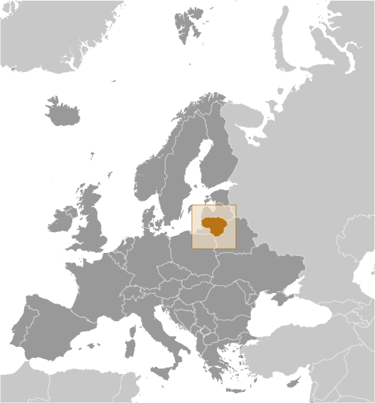
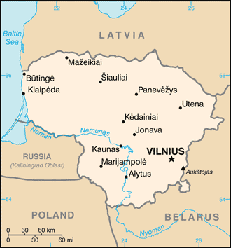
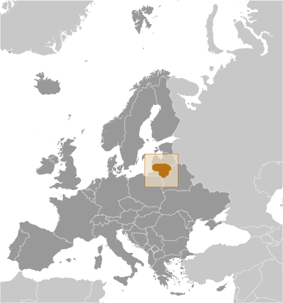
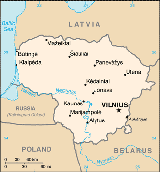

Europe :: LITHUANIA
Introduction :: LITHUANIA
-
Lithuanian lands were united under MINDAUGAS in 1236; over the next century, through alliances and conquest, Lithuania extended its territory to include most of present-day Belarus and Ukraine. By the end of the 14th century Lithuania was the largest state in Europe. An alliance with Poland in 1386 led the two countries into a union through the person of a common ruler. In 1569, Lithuania and Poland formally united into a single dual state, the Polish-Lithuanian Commonwealth. This entity survived until 1795 when its remnants were partitioned by surrounding countries. Lithuania regained its independence following World War I but was annexed by the USSR in 1940 - an action never recognized by the US and many other countries. On 11 March 1990, Lithuania became the first of the Soviet republics to declare its independence, but Moscow did not recognize this proclamation until September of 1991 (following the abortive coup in Moscow). The last Russian troops withdrew in 1993. Lithuania subsequently restructured its economy for integration into Western European institutions; it joined both NATO and the EU in the spring of 2004. In January 2014, Lithuania assumed a nonpermanent seat on the UN Security Council for the 2014-15 term; in January 2015, Lithuania joined the euro zone.
Geography :: LITHUANIA
-
Eastern Europe, bordering the Baltic Sea, between Latvia and Russia, west of Belarus56 00 N, 24 00 EEuropetotal: 65,300 sq kmland: 62,680 sq kmwater: 2,620 sq kmcountry comparison to the world: 124slightly larger than West Virginiatotal: 1,549 kmborder countries (4): Belarus 640 km, Latvia 544 km, Poland 104 km, Russia (Kaliningrad) 261 km90 kmterritorial sea: 12 nmtransitional, between maritime and continental; wet, moderate winters and summerslowland, many scattered small lakes, fertile soilmean elevation: 110 melevation extremes: lowest point: Baltic Sea 0 mhighest point: Aukstojas 294 mpeat, arable land, amberagricultural land: 44.8%arable land 34.9%; permanent crops 0.5%; permanent pasture 9.4%forest: 34.6%other: 20.6% (2011 est.)44 sq km (2012)fairly even population distribution throughout the country, but somewhat greater concentrations in the southern cities of Vilnius and Kaunas, and the western port of Klaipedaoccasional floods, droughtscontamination of soil and groundwater with petroleum products and chemicals at military basesparty to: Air Pollution, Air Pollution-Nitrogen Oxides, Air Pollution-Persistent Organic Pollutants, Air Pollution-Sulphur 85, Air Pollution-Sulphur 94, Air Pollution-Volatile Organic Compounds, Biodiversity, Climate Change, Climate Change-Kyoto Protocol, Desertification, Endangered Species, Environmental Modification, Hazardous Wastes, Law of the Sea, Ozone Layer Protection, Ship Pollution, Wetlandssigned, but not ratified: none of the selected agreementsfertile central plains are separated by hilly uplands that are ancient glacial deposits
People and Society :: LITHUANIA
-
2,823,859 (July 2017 est.)country comparison to the world: 140noun: Lithuanian(s)adjective: LithuanianLithuanian 84.1%, Polish 6.6%, Russian 5.8%, Belarusian 1.2%, other 1.1%, unspecified 1.2% (2011 est.)Lithuanian (official) 82%, Russian 8%, Polish 5.6%, other 0.9%, unspecified 3.5% (2011 est.)Roman Catholic 77.2%, Russian Orthodox 4.1%, Old Believer 0.8%, Evangelical Lutheran 0.6%, Evangelical Reformist 0.2%, other (including Sunni Muslim, Jewish, Greek Catholic, and Karaite) 0.8%, none 6.1%, unspecified 10.1% (2011 est.)0-14 years: 15.01% (male 217,438/female 206,533)15-24 years: 11.09% (male 161,965/female 151,197)25-54 years: 40.05% (male 557,504/female 573,364)55-64 years: 14.17% (male 177,157/female 223,110)65 years and over: 19.67% (male 187,859/female 367,732) (2017 est.)total dependency ratio: 49.9youth dependency ratio: 21.9elderly dependency ratio: 28potential support ratio: 3.6 (2015 est.)total: 43.7 yearsmale: 39.7 yearsfemale: 47.1 years (2017 est.)country comparison to the world: 16-1.08% (2017 est.)country comparison to the world: 2309.9 births/1,000 population (2017 est.)country comparison to the world: 19514.6 deaths/1,000 population (2017 est.)country comparison to the world: 2-6.1 migrant(s)/1,000 population (2017 est.)country comparison to the world: 200fairly even population distribution throughout the country, but somewhat greater concentrations in the southern cities of Vilnius and Kaunas, and the western port of Klaipedaurban population: 66.5% of total population (2017)rate of urbanization: -0.34% annual rate of change (2015-20 est.)VILNIUS (capital) 517,000 (2015)at birth: 1.06 male(s)/female0-14 years: 1.05 male(s)/female15-24 years: 1.07 male(s)/female25-54 years: 0.97 male(s)/female55-64 years: 0.79 male(s)/female65 years and over: 0.51 male(s)/femaletotal population: 0.86 male(s)/female (2016 est.)27 years (2014 est.)10 deaths/100,000 live births (2015 est.)country comparison to the world: 147total: 3.8 deaths/1,000 live birthsmale: 4.3 deaths/1,000 live birthsfemale: 3.3 deaths/1,000 live births (2017 est.)country comparison to the world: 197total population: 75 yearsmale: 69.7 yearsfemale: 80.7 years (2017 est.)country comparison to the world: 1121.59 children born/woman (2017 est.)country comparison to the world: 1856.6% of GDP (2014)country comparison to the world: 894.33 physicians/1,000 population (2014)7 beds/1,000 population (2011)improved:urban: 99.7% of populationrural: 90.4% of populationtotal: 96.6% of populationunimproved:urban: 0.3% of populationrural: 9.6% of populationtotal: 3.4% of population (2015 est.)improved:urban: 97.2% of populationrural: 82.8% of populationtotal: 92.4% of populationunimproved:urban: 2.8% of populationrural: 17.2% of populationtotal: 7.6% of population (2015 est.)0.2% (2016 est.)country comparison to the world: 922,900 (2016 est.)country comparison to the world: 113<200degree of risk: intermediatevectorborne diseases: tickborne encephalitis (2016)26.3% (2016)country comparison to the world: 434.6% of GDP (2013)country comparison to the world: 61definition: age 15 and over can read and writetotal population: 99.8%male: 99.8%female: 99.8% (2015 est.)total: 17 yearsmale: 16 yearsfemale: 17 years (2014)total: 16.3%male: 16%female: 16.6% (2015 est.)country comparison to the world: 35
Government :: LITHUANIA
-
conventional long form: Republic of Lithuaniaconventional short form: Lithuanialocal long form: Lietuvos Respublikalocal short form: Lietuvaformer: Lithuanian Soviet Socialist Republicetymology: meaning of the name "Lietuva" remains unclear; it may derive from the Lietava, a stream in east central Lithuaniasemi-presidential republicname: Vilniusgeographic coordinates: 54 41 N, 25 19 Etime difference: UTC+2 (7 hours ahead of Washington, DC, during Standard Time)daylight saving time: +1hr, begins last Sunday in March; ends last Sunday in October60 municipalities (savivaldybe, singular - savivaldybe); Akmene, Alytaus Miestas, Alytus, Anksciai, Birstono, Birzai, Druskininkai, Elektrenai, Ignalina, Jonava, Joniskis, Jurbarkas, Kaisiadorys, Kalvarijos, Kauno Miestas, Kaunas, Kazlu Rudos, Kedainiai, Kelme, Klaipedos Miestas, Klaipeda, Kretinga, Kupiskis, Lazdijai, Marijampole, Mazeikiai, Moletai, Neringa, Pagegiai, Pakruojis, Palangos Miestas, Panevezio Miestas, Panevezys, Pasvalys, Plunge, Prienai, Radviliskis, Raseiniai, Rietavo, Rokiskis, Sakiai, Salcininkai, Siauliu Miestas, Siauliai, Silale, Silute, Sirvintos, Skuodas, Svencionys, Taurage, Telsiai, Trakai, Ukmerge, Utena, Varena, Vilkaviskis, Vilniaus Miestas, Vilnius, Visaginas, Zarasai11 March 1990 (declared independence from the Soviet Union); 6 September 1991 (recognized by the Soviet Union); notable earlier dates: 6 July 1253 (coronation of MINDAUGAS, traditional founding date), 1 July 1569 (Polish-Lithuanian Commonwealth created), 16 February 1918 (independence from Soviet Russia)Independence Day (or National Day), 16 February (1918); note - 16 February 1918 was the date Lithuania established its statehood and its concomitant independence from Soviet Russia and Germany; 11 March 1990 was the date it declared the restoration of Lithuanian statehood and its concomitant independence from the Soviet Unionhistory: several previous; latest adopted by referendum 25 October 1992, entered into force 2 November 1992amendments: proposed by at least one-fourth of all Parliament members or by petition of at least 300,000 voters; passage requires two-thirds majority vote of Parliament in each of two readings three months apart and a presidential signature; amendments to constitutional articles on national sovereignty and constitutional amendment procedure also require three-fourths voter approval in a referendum; amended 1996, 2003, 2006 (2016)civil law system; legislative acts can be appealed to the Constitutional Courtaccepts compulsory ICJ jurisdiction with reservations; accepts ICCt jurisdictioncitizenship by birth: nocitizenship by descent only: at least one parent must be a citizen of Lithuaniadual citizenship recognized: noresidency requirement for naturalization: 10 years18 years of age; universalchief of state: President Dalia GRYBAUSKAITE (since 12 July 2009)head of government: Prime Minister Saulius SKVERNELIS (since 13 December 2016)cabinet: Council of Ministers nominated by the prime minister, appointed by the president, and approved by Parliamentelections/appointments: president directly elected by absolute majority popular vote in 2 rounds if needed for a 5-year term (eligible for a second term); election last held on 11 and 25 May 2014 (next to be held in May 2019); prime minister appointed by the president, approved by Parliamentelection results: Dalia GRYBAUSKAITE reelected president in second reound; percent of vote - Dalia GRYBAUSKAITE (independent) 57.9%, Zigmantas BALCYTIS (LSDP) 40.1%, invalid 2%; Saulius SKVERNELIS (LVZS) approved as prime minister by Parliament vote - 90 to 4description: unicameral Parliament or Seimas (141 seats; 71 members directly elected in single-seat constituencies by absolute majority vote and 70 directly elected in a single nationwide constituency by proportional representation vote; members serve 4-year terms)elections: last held on 9 and 23 October 2016 (next to be held in October 2020)election results: percent of vote by party - LVLS 22.5%, TS-LKD 22.6%, LSDP 15%, LS 9.5%, LCP-LPP 6.3%, LLRA 5.7%, TT 5.6%, DP 4.9%, LZP 2%, Lithuanian List 1.8%, other 4.1%; seats by party - LVLS 54, TS-LKD 31, LSDP 17, LS 14, LLRA 8, TT 8, DP 2, LCP-LPP 1, LZP 1, Lithuanian List 1, independent 4highest court(s): Supreme Court (consists of 37 judges); Constitutional Court (consists of 9 judges)judge selection and term of office: Supreme Court judges nominated by the president and appointed by the Seimas; judges serve 5-year renewable terms; Constitutional Court judges appointed by the Seimas from nominations - three each by the president of the republic, by the Seimas chairperson, and by the Supreme Court president; judges serve 9-year, nonrenewable terms; one-third of membership reconstituted every 3 yearssubordinate courts: Court of Appeals; district and local courtsAnti-Corruption Coalition or LCP-LPP [Naglis PUTEIKIS and Kristupas KRIVICKAS]Electoral Action of Lithuanian Poles or LLRA [Valdemar TOMASEVSKI]Homeland Union-Lithuanian Christian Democrats or TS-LKD [Gabrielius LANDSBERGIS]Labor Party or DP [Valentinas MAZURONIS]Liberal Movement or LS or LRLS (vacant)Lithuanian Center Party or LCP [Naglis PUTEIKIS]Lithuanian Green Party or LZP [Linas BALSYS]Lithuanian List [Darius KUOLYS]Lithuanian Pensioners Party or LPP [Kristupas KRIVICKAS]Lithuanian Social Democratic Party or LSDP [Algirdas BUTKEVICIUS]Order and Justice Party or TT [Remigijus ZEMAITAITIS]Peasant and Greens Union or LVZS [Ramunas KARBAUSKIS] (formerly LVLS)Way of Courage or DK [Jonas VARKALA]Australia Group, BA, BIS, CBSS, CD, CE, EAPC, EBRD, ECB, EIB, EU, FAO, IAEA, IBRD, ICAO, ICC (national committees), ICCt, ICRM, IDA, IFC, IFRCS, ILO, IMF, IMO, Interpol, IOC, IOM, IPU, ISO, ITU, ITUC (NGOs), MIGA, NATO, NIB, NSG, OAS (observer), OIF (observer), OPCW, OSCE, PCA, Schengen Convention, UN, UN Security Council (non-permanent), UNCTAD, UNESCO, UNIDO, UNWTO, UPU, WCO, WHO, WIPO, WMO, WTOchief of mission: Ambassador Rolandas KRISCIUNAS (since 17 September 2015)chancery: 2622 16th Street NW, Washington, DC 20009telephone: [1] (202) 234-5860FAX: [1] (202) 328-0466consulate(s) general: Chicago, Los Angeles, New Yorkchief of mission: Ambassador Anne HALL (since 7 October 2016)embassy: Akmenu gatve 6, Vilnius, LT-03106mailing address: American Embassy, Akmenu Gatve 6, Vilnius LT-03106telephone: [370] (5) 266-5500FAX: [370] (5) 266-5510three equal horizontal bands of yellow (top), green, and red; yellow symbolizes golden fields, as well as the sun, light, and goodness; green represents the forests of the countryside, in addition to nature, freedom, and hope; red stands for courage and the blood spilled in defense of the homelandmounted knight known as Vytis (the Chaser), white stork; national colors: yellow, green, redname: "Tautiska giesme" (The National Song)lyrics/music: Vincas KUDIRKAnote: adopted 1918, restored 1990; written in 1898 while Lithuania was a part of Russia; banned during the Soviet occupation from 1940 to 1990
Economy :: LITHUANIA
-
After the country declared independence from the Soviet Union in 1990, Lithuania faced an initial dislocation that is typical during transitions from a planned economy to a free-market economy. Macroeconomic stabilization policies, including privatization of most state-owned enterprises, and a strong commitment to a currency board arrangement led to an open and rapidly growing economy and rising consumer demand. Foreign investment and EU funding aided in the transition. Lithuania joined the WTO in May 2001, the EU in May 2004, and the euro zone in January 2015, and is now working to complete the OECD accession roadmap it received in July 2015.The Lithuanian economy was severely hit by the 2008-09 global financial crisis, but it has rebounded and become one of the fastest growing in the EU. In 2015, Russia was Lithuania’s largest trading partner, followed by Poland, Germany, and Latvia; goods and services trade between the US and Lithuania totaled $2.2 billion.Lithuania’s ongoing recovery hinges on improving the business environment, especially by liberalizing labor laws, and improving competitiveness and export growth, the latter of which has been hampered by economic slowdowns in the EU and Russia. In addition, a steady outflow of young and highly educated people is causing a shortage of skilled labor. Lithuania opened a self-financed liquefied natural gas terminal in January 2015, providing the first non-Russian supply of natural gas to the Baltic States and reducing Lithuania’s dependence on Russian gas from 100% to approximately 30% in 2016.$86.05 billion (2016 est.)$83.06 billion (2015 est.)$80.73 billion (2014 est.)note: data are in 2016 dollarscountry comparison to the world: 88$42.76 billion (2016 est.)2.3% (2016 est.)1.8% (2015 est.)3.5% (2014 est.)country comparison to the world: 124$30,000 (2016 est.)$29,000 (2015 est.)$28,200 (2014 est.)note: data are in 2016 dollarscountry comparison to the world: 6315.5% of GDP (2016 est.)17.6% of GDP (2015 est.)22.3% of GDP (2014 est.)country comparison to the world: 126household consumption: 65.1%government consumption: 17.7%investment in fixed capital: 18.6%investment in inventories: -2.3%exports of goods and services: 74.3%imports of goods and services: -73.5% (2016 est.)agriculture: 3.3%industry: 28.7%services: 68.1% (2016 est.)grain, potatoes, sugar beets, flax, vegetables; beef, milk, eggs, pork, cheese; fishmetal-cutting machine tools, electric motors, televisions, refrigerators and freezers, petroleum refining, shipbuilding (small ships), furniture, textiles, food processing, fertilizer, agricultural machinery, optical equipment, lasers, electronic components, computers, amber jewelry, information technology, video game development, app/software development, biotechnology0.3% (2016 est.)country comparison to the world: 1561.478 million (2016 est.)country comparison to the world: 132agriculture: 9.1%industry: 25.2%services: 65.8% (2015 est.)7.9% (2016 est.)9.1% (2015 est.)country comparison to the world: 10022.2% (2015 est.)lowest 10%: 2.2%highest 10%: 28.8% (2015)37.9 (2015)35 (2014)country comparison to the world: 75revenues: $14.73 billionexpenditures: $14.62 billion (2016 est.)34.5% of GDP (2016 est.)country comparison to the world: 570.3% of GDP (2016 est.)country comparison to the world: 3840.2% of GDP (2016 est.)42.7% of GDP (2015 est.)note: official data; data cover general government debt, and includes debt instruments issued (or owned) by government entities other than the treasury; the data include treasury debt held by foreign entities, debt issued by subnational entities, as well as intra-governmental debt; intra-governmental debt consists of treasury borrowings from surpluses in the social funds, such as for retirement, medical care, and unemployment; debt instruments for the social funds are sold at public auctionscountry comparison to the world: 133calendar year0.7% (2016 est.)-0.7% (2015 est.)country comparison to the world: 760% (31 December 2016 est.)0.05% (31 December 2015 est.)country comparison to the world: 1542.83% (31 December 2016 est.)2.96% (31 December 2015 est.)country comparison to the world: 169$20.93 billion (31 December 2016 est.)$19.4 billion (31 December 2015 est.)country comparison to the world: 67$24.87 billion (31 December 2016 est.)$23.94 billion (31 December 2015 est.)country comparison to the world: 82$28.55 billion (31 December 2016 est.)$24.43 billion (31 December 2015 est.)country comparison to the world: 80$6.76 billion (31 December 2016 est.)$6.799 billion (31 December 2015 est.)$7.127 billion (31 December 2014 est.)country comparison to the world: 81$-379 million (2016 est.)$-976.7 million (2015 est.)country comparison to the world: 94$24.23 billion (2016 est.)$24.73 billion (2015 est.)country comparison to the world: 66refined fuel, machinery and equipment, chemicals, textiles, foodstuffs, plasticsRussia 13.5%, Latvia 9.9%, Poland 9.1%, Germany 7.7%, Estonia 5.3%, US 5.2%, Sweden 4.8%, UK 4.3% (2016)$26.35 billion (2016 est.)$26.94 billion (2015 est.)country comparison to the world: 64oil, natural gas, machinery and equipment, transport equipment, chemicals, textiles and clothing, metalsRussia 14.4%, Germany 12.1%, Poland 10.8%, Latvia 8%, Italy 5.4%, Netherlands 4.8%, Sweden 4.4% (2016)$2.602 billion (31 December 2016 est.)$1.697 billion (31 December 2015 est.)country comparison to the world: 111$34.48 billion (31 March 2016 est.)$31.6 billion (31 March 2015 est.)country comparison to the world: 75$15.87 billion (31 December 2016 est.)$16.24 billion (31 December 2015 est.)country comparison to the world: 85$4.48 billion (31 December 2016 est.)$4.155 billion (31 December 2015 est.)country comparison to the world: 73litai (LTL) per US dollar -0.9037 (2016 est.)0.9037 (2015 est.)0.9012 (2014 est.)0.7525 (2013 est.)2.69 (2012 est.)
Energy :: LITHUANIA
-
electrification - total population: 100% (2016)3.433 billion kWh (2015 est.)country comparison to the world: 1299.848 billion kWh (2015 est.)country comparison to the world: 94730 million kWh (2015 est.)country comparison to the world: 617.938 billion kWh (2015 est.)country comparison to the world: 313.641 million kW (2015 est.)country comparison to the world: 9459.9% of total installed capacity (2015 est.)country comparison to the world: 1290% of total installed capacity (2015 est.)country comparison to the world: 1283.2% of total installed capacity (2015 est.)country comparison to the world: 13218.3% of total installed capacity (2015 est.)country comparison to the world: 352,000 bbl/day (2016 est.)country comparison to the world: 881,238 bbl/day (2014 est.)country comparison to the world: 70160,800 bbl/day (2014 est.)country comparison to the world: 3512 million bbl (1 January 2017 es)country comparison to the world: 91174,800 bbl/day (2014 est.)country comparison to the world: 5553,000 bbl/day (2015 est.)country comparison to the world: 103145,600 bbl/day (2014 est.)country comparison to the world: 3727,520 bbl/day (2014 est.)country comparison to the world: 1030 cu m (2014 est.)country comparison to the world: 1592.93 billion cu m (2015 est.)country comparison to the world: 780 cu m (2014 est.)country comparison to the world: 1372.2 billion cu m (2015 est.)country comparison to the world: 500 cu m (2016 est.)country comparison to the world: 16111.2 million Mt (2015 est.)country comparison to the world: 99
Communications :: LITHUANIA
-
total subscriptions: 530,871subscriptions per 100 inhabitants: 19 (July 2016 est.)country comparison to the world: 93total: 4,204,692subscriptions per 100 inhabitants: 147 (July 2016 est.)country comparison to the world: 124general assessment: adequate; being modernized to provide improved international capability and better residential accessdomestic: rapid expansion of mobile-cellular services has resulted in a steady decline in the number of fixed-line connections; mobile-cellular teledensity stands at about 145 per 100 personsinternational: country code - 370; major international connections to Denmark, Sweden, and Norway by submarine cable for further transmission by satellite; landline connections to Latvia and Poland (2016)public broadcaster operates 3 channels with the third channel - a satellite channel - introduced in 2007; various privately owned commercial TV broadcasters operate national and multiple regional channels; many privately owned local TV stations; multi-channel cable and satellite TV services available; publicly owned broadcaster operates 3 radio networks; many privately owned commercial broadcasters, with repeater stations in various regions throughout the country (2007).lttotal: 2,122,884percent of population: 74.4% (July 2016 est.)country comparison to the world: 97
Transportation :: LITHUANIA
-
number of registered air carriers: 2inventory of registered aircraft operated by air carriers: 52annual passenger traffic on registered air carriers: 1,363,950annual freight traffic on registered air carriers: 565,642 mt-km (2015)LY (2016)61 (2013)country comparison to the world: 79total: 22over 3,047 m: 32,438 to 3,047 m: 11,524 to 2,437 m: 7914 to 1,523 m: 2under 914 m: 9 (2017)total: 39over 3,047 m: 1914 to 1,523 m: 2under 914 m: 36 (2013)gas 1,921 km; refined products 121 km (2013)total: 1,768 kmbroad gauge: 1,746 km 1.520-m gauge (122 km electrified)standard gauge: 22 km 1.435-m gauge (2014)country comparison to the world: 77total: 84,166 kmpaved: 72,297 km (includes 312 km of expressways)unpaved: 11,869 km (2012)country comparison to the world: 58441 km (navigable year-round) (2007)country comparison to the world: 86total: 38by type: cargo 20, container 1, passenger/cargo 6, refrigerated cargo 9, roll on/roll off 2foreign-owned: 8 (Denmark 8)registered in other countries: 22 (Antigua and Barbuda 3, Belize 1, Comoros 1, Cook Islands 1, Norway 1, Panama 3, Saint Vincent and the Grenadines 9, unknown 3) (2010)country comparison to the world: 78major seaport(s): Klaipedaoil terminal(s): Butinge oil terminalLNG terminal(s) (import): Klaipeda
Military and Security :: LITHUANIA
-
1.49% of GDP (2016)1.14% of GDP (2015)0.88% of GDP (2014)0.76% of GDP (2013)0.77% of GDP (2012)country comparison to the world: 103Lithuanian Armed Forces (Lietuvos Ginkluotosios Pajegos): Land Forces (Sausumos Pajegos), Naval Forces (Karines Juru Pajegos), Air Forces (Karines Oro Pajegos), Special Forces (Specialiuju Operaciju Pajegos); Volunteer Forces (Savanoriu Pajegos) (2016)18 years of age for military service; 9-month service obligation; in 2015, Lithuania reinstated conscription after having converted to a professional military in the fall of 2008 (2016)
Transnational Issues :: LITHUANIA
-
Lithuania and Russia committed to demarcating their boundary in 2006 in accordance with the land and maritime treaty ratified by Russia in May 2003 and by Lithuania in 1999; Lithuania operates a simplified transit regime for Russian nationals traveling from the Kaliningrad coastal exclave into Russia, while still conforming, as a EU member state having an external border with a non-EU member, to strict Schengen border rules; boundary demarcated with Latvia and Lithuania; as of January 2007, ground demarcation of the boundary with Belarus was complete and mapped with final ratification documents in preparationstateless persons: 3,466 (2016)transshipment and destination point for cannabis, cocaine, ecstasy, and opiates from Southwest Asia, Latin America, Western Europe, and neighboring Baltic countries; growing production of high-quality amphetamines, but limited production of cannabis, methamphetamines; susceptible to money laundering despite changes to banking legislation